Introduction: Plotting Adjusted Predictions and Marginal Means
Source:vignettes/introduction_plotmethod.Rmd
introduction_plotmethod.Rmdplot()-method
This vignettes demonstrates the plot()-method of the
ggeffects-package. It is recommended to read the general introduction first, if you haven’t
done this yet.
If you don’t want to write your own ggplot-code,
ggeffects has a plot()-method with some
convenient defaults, which allows quickly creating ggplot-objects.
plot() has some arguments to tweak the plot-appearance. For
instance, show_ci allows you to show or hide confidence
bands (or error bars, for discrete variables), facets
allows you to create facets even for just one grouping variable, or
colors allows you to quickly choose from some
color-palettes, including black & white colored plots. Use
show_data to add the raw data points to the plot.
ggeffects supports labelled data and
the plot()-method automatically sets titles, axis - and
legend-labels depending on the value and variable labels of the
data.
library(ggplot2)
library(ggeffects)
data(efc, package = "ggeffects")
efc$c172code <- datawizard::to_factor(efc$c172code)
fit <- lm(barthtot ~ c12hour + neg_c_7 + c161sex + c172code, data = efc)Facet by Group
dat <- predict_response(fit, terms = c("c12hour", "c172code"))
plot(dat, facets = TRUE)No Facets, in Black & White
# don't use facets, b/w figure, w/o confidence bands
plot(dat, colors = "bw", show_ci = FALSE)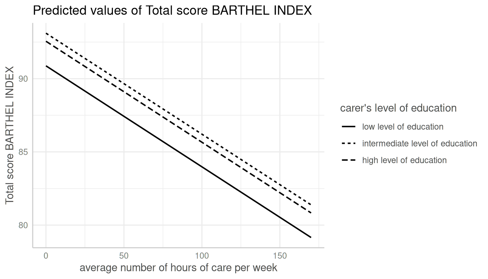
Add Data Points to Plot
dat <- predict_response(fit, terms = c("c12hour", "c172code"))
plot(dat, show_data = TRUE)
Automatic Facetting
# for three variables, automatic facetting
dat <- predict_response(fit, terms = c("c12hour", "c172code", "c161sex"))
plot(dat)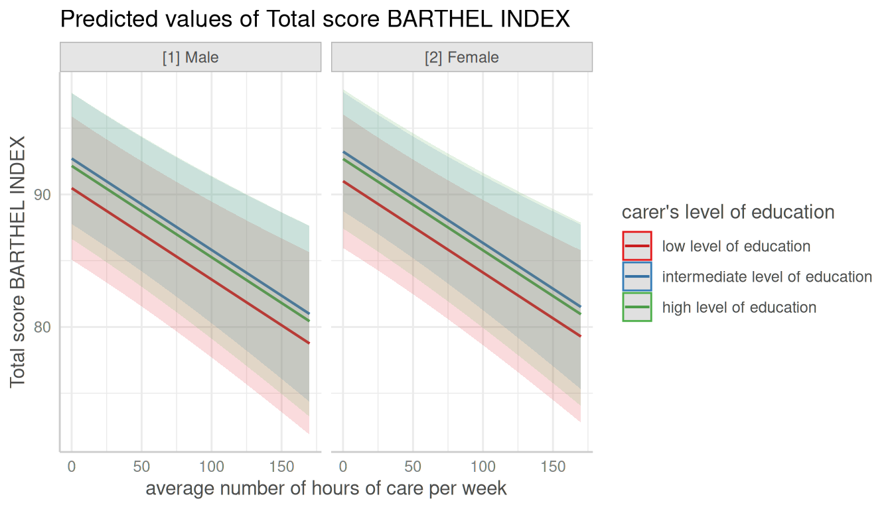
Automatic Selection of Error Bars or Confidence Bands
# categorical variables have errorbars
dat <- predict_response(fit, terms = c("c172code", "c161sex"))
plot(dat)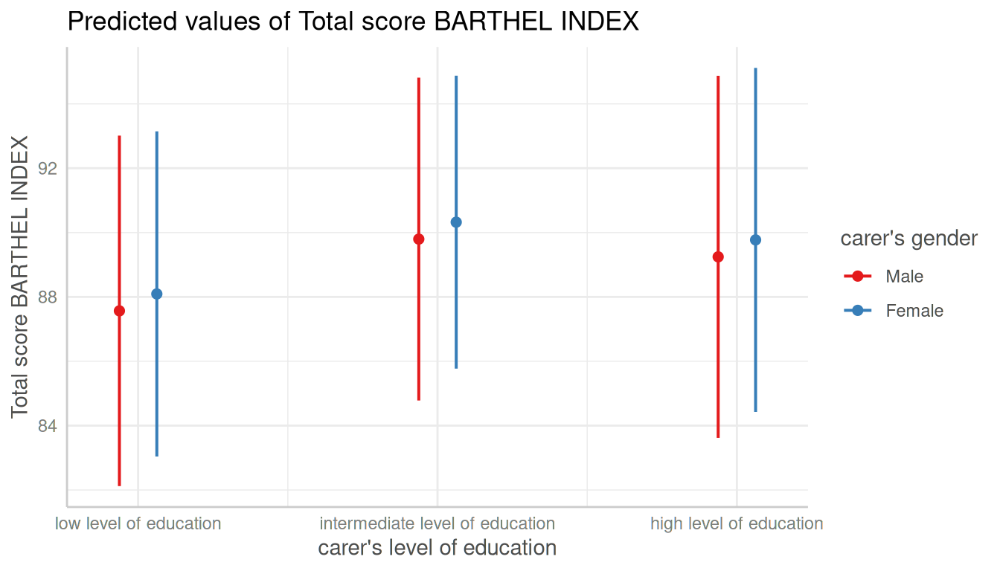
Connect Discrete Data Points with Lines
# point-geoms for discrete x-axis can be connected with lines
plot(dat, connect_lines = TRUE)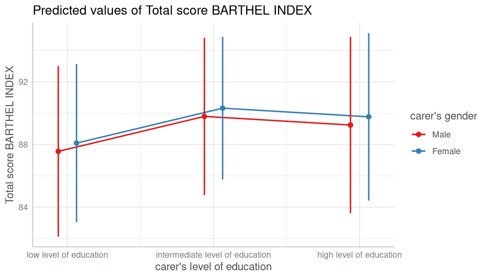
Create Panel Plots for more than three Terms
For three grouping variable (i.e. if terms is of length
four), one plot per panel (the values of the fourth
variable in terms) is created, and a single, integrated
plot is produced by default. Use one_plot = FALSE to return
one plot per panel.
# for four variables, automatic facetting and integrated panel
dat <- predict_response(fit, terms = c("c12hour", "c172code", "c161sex", "neg_c_7"))
# use 'one_plot = FALSE' for returning multiple single plots
plot(dat, one_plot = TRUE)
If facets become too small, you can align the panels in multiple
rows, using the n_rows argument. Furthermore, use functions
from ggplot2 to align the legend.
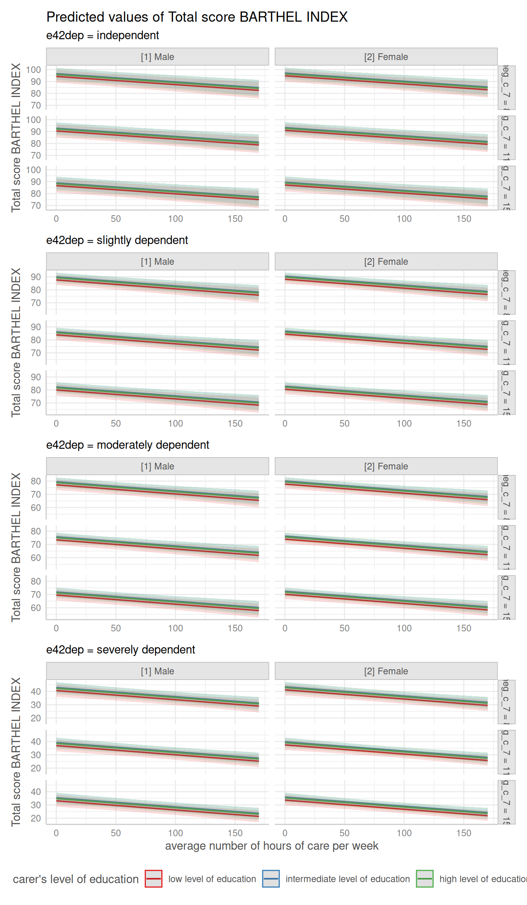
Change appearance of confidence bands
In some plots, the the confidence bands are not represented by a
shaded area (ribbons), but rather by error bars (with line), dashed or
dotted lines. Use ci_style = "errorbar",
ci_style = "dash" or ci_style = "dot" to
change the style of confidence bands.
Dashed Lines for Confidence Intervals
# dashed lines for CI
dat <- predict_response(fit, terms = "c12hour")
plot(dat, ci_style = "dash")
Error Bars for Continuous Variables
# facet by group
dat <- predict_response(fit, terms = c("c12hour", "c172code"))
plot(dat, facets = TRUE, ci_style = "errorbar", dot_size = 1.5)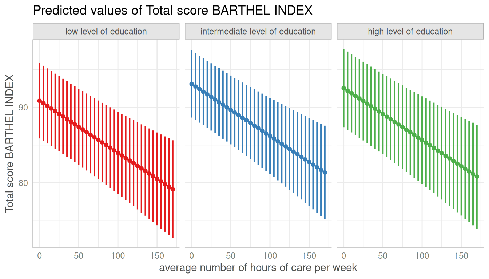
Dotted Error Bars
The style of error bars for plots with categorical x-axis can also be
changed. By default, these are “error bars”, but
ci_style = "dot" or ci_style = "dashed" works
as well
dat <- predict_response(fit, terms = "c172code")
plot(dat, ci_style = "dot")
Log-transform y-axis for binomial models
For binomial models, the y-axis indicates the predicted probabilities of an event. In this case, error bars are not symmetrical.
library("lme4")
m <- glm(
cbind(incidence, size - incidence) ~ period,
family = binomial,
data = lme4::cbpp
)
dat <- predict_response(m, "period")
# normal plot, asymmetrical error bars
plot(dat)
Here you can use log_y to log-transform the y-axis. The
plot()-method will automatically choose axis breaks and
limits that fit well to the value range and log-scale.
# plot with log-transformed y-axis
plot(dat, log_y = TRUE)
Control y-axis appearance
Furthermore, arguments in ... are passed down to
ggplot::scale_y_continuous() (resp.
ggplot::scale_y_log10(), if log_y = TRUE), so
you can control the appearance of the y-axis.
# plot with log-transformed y-axis, modify breaks
plot(
dat, log_y = TRUE,
breaks = c(0.05, 0.1, 0.15, 0.2, 0.25, 0.3),
limits = c(0.01, 0.3)
)
Survival models
predict_response() also supports
coxph-models from the survival-package and
is able to either plot risk-scores (the default), probabilities of
survival (type = "survival") or cumulative hazards
(type = "cumulative_hazard").
Since probabilities of survival and cumulative hazards are changing
across time, the time-variable is automatically used as x-axis in such
cases, so the terms-argument only needs up to two
variables.
library(survival)
data("lung2")
m <- coxph(Surv(time, status) ~ sex + age + ph.ecog, data = lung2)
# predicted risk-scores
pr <- predict_response(m, c("sex", "ph.ecog"))
plot(pr)
# probability of survival
pr <- predict_response(m, c("sex", "ph.ecog"), type = "survival")
plot(pr)
# cumulative hazards
pr <- predict_response(m, c("sex", "ph.ecog"), type = "cumulative_hazard")
plot(pr)
Custom color palettes
The ggeffects-package has a few pre-defined
color-palettes that can be used with the colors-argument.
Use show_palettes() to see all available palettes.
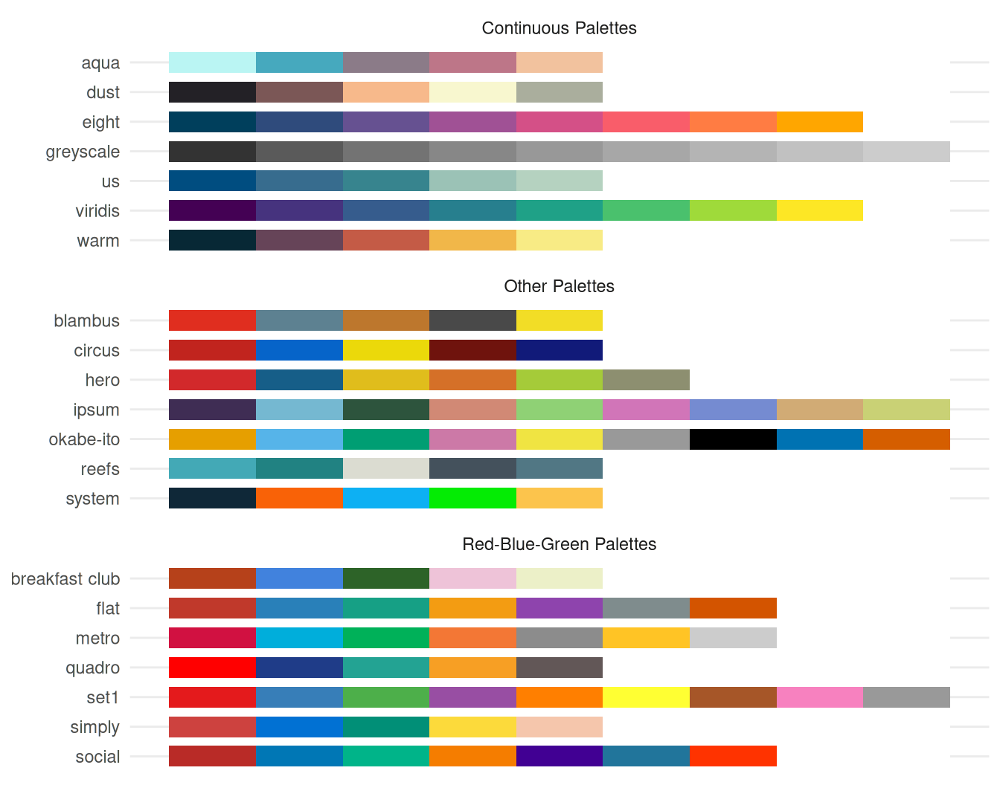
Here are two examples showing how to use pre-defined colors:
dat <- predict_response(fit, terms = c("c12hour", "c172code"))
plot(dat, facets = TRUE, colors = "circus")
dat <- predict_response(fit, terms = c("c172code", "c12hour [quart]"))
plot(dat, colors = "hero", dodge = 0.4) # increase space between error bars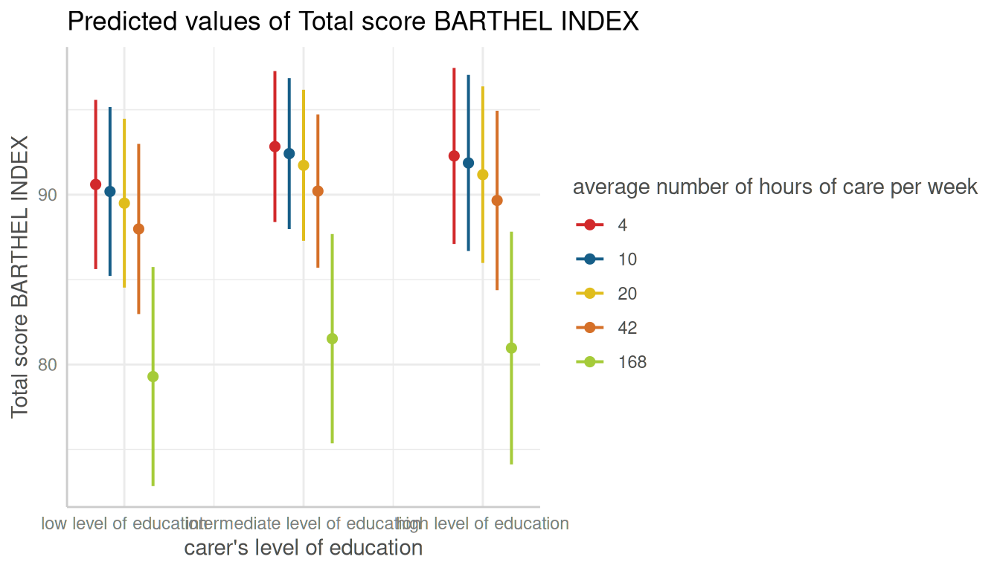